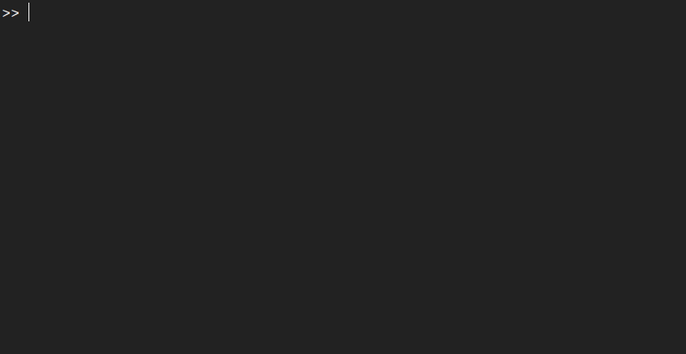

Installation
The toolkit is easy to install. The fastest and easiest way to acquire the toolkit is through git. You can directly clone the repository using the command:
git clone --depth 1 https://github.com/BJCaasenbrood/SorotokiCode.git
Alternatively, you can download the latest version of the toolkit below, and unpack the compressed folder at any desired working directory.
Stable V3.03 (.zip) Stable V3.03 (.tar) Download from Github
1) Open MATLAB
- MATLAB compatibility: verified from R2018a – to R2021a.
- OS compatibility: Windows/Linux (OSX untested).
- Installation size: ~75 MB
Please inform the developers if any compatibility issues may occur.
2) Install the prerequisites
To use SOROTOKI optimally, make sure you have the following dependencies installed:
- Optimization Toolbox, Partial Differential Equation Toolbox, and Image Processing Toolbox
- C++ compiler, Eigen Libary, and CMAKE are highly recommended.
3) Run the installation script
Once you’ve opened MATLAB, you first have to configure the toolkit with MATLAB’s search paths. Setting up these paths is relatively straightforward. Simply run sorotoki():

During install, the installer will ask you if SOROTOKI should can set as the main directory of MATLAB. This implies every time you open MATLAB, it will automatically go this directory.
By using the command: cdsoro, you can quickly go back to the main directory from any other directory (super useful!). It will also generate the file startup.m that loads the toolkit automatically. This start-up file is typically located under ./Documents/MATLAB/startup.m for Linux/Windows OS.
That’s all folks!
The soft robotics toolkit is now ready-to-use. The toolkit can be verified using the command sorotoki('check').
Checking for future updates
It is also worth mentioning that the command above is also used to update the toolkit. It is recommended to run sorotoki() to check for updates occasionally. Or type:
% show demos
sorotoki('update');